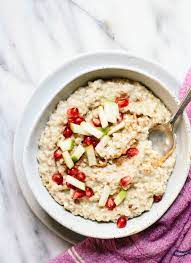

Steel Cut Oats

Description
Easy stove-top steel cut oats.
Many different toppings may be used. Toppings I like include apples, berries, oat
milk, honey, peanut butter, flaxseed, and applesauce.
Ingredients
- 1 cup steel cut oats
- 3 cups water
- Dash of salt
- Toppings
- Fruit: apples, berries, bananas
- Seeds: flax, chia seeds
- Milk
- Applesauce
- Peanut Butter
Steps
- Heat water until boiling
- Add salt
- Add oats, reduce to simmer
- Stir occasionally until cooked through
- Add additional water if dry or sticky
- Place in bowl, add toppings
- Serves 2-3